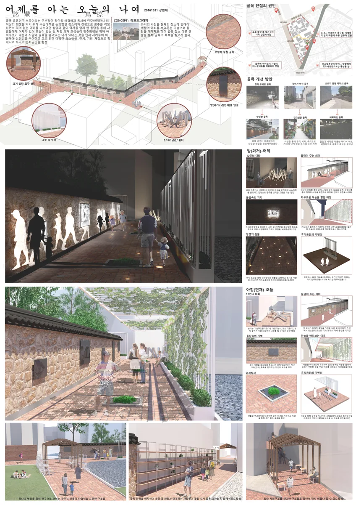

우수상작품 보기어제를 아는 오늘의 나여
옛 사진과 현재의 골목 풍경을 겹쳐 장소의 기억을 드러내는 골목길 재생 제안. 인쇄의거리 대학생 아이디어 공모전의 패널과 우수상 수상 기록입니다.
BEYOND THE STUDIO
02 ENTRIES · 2021 / 2025
골목의 기억을 잇는 공간 제안에서 PC 접합부의 시공 공법까지. 두 공모전의 아이디어와 패널, 우수상 수상 기록을 함께 담았습니다.
2021.08.10 / 광주광역시 동구
임유열 명의 상장 · 인쇄의거리 골목길 재생 아이디어
수상 기록과 상장 보기 ↗
우수상작품 보기옛 사진과 현재의 골목 풍경을 겹쳐 장소의 기억을 드러내는 골목길 재생 제안. 인쇄의거리 대학생 아이디어 공모전의 패널과 우수상 수상 기록입니다.
 우수상작품 보기
우수상작품 보기전자기 유도가열, 강섬유, U-bar를 결합해 PC 습식 접합부의 양생과 연결 성능을 함께 개선하는 공법을 제안했습니다. 건축시공기술대전 우수상 수상작입니다.